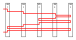
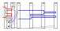
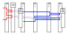
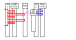
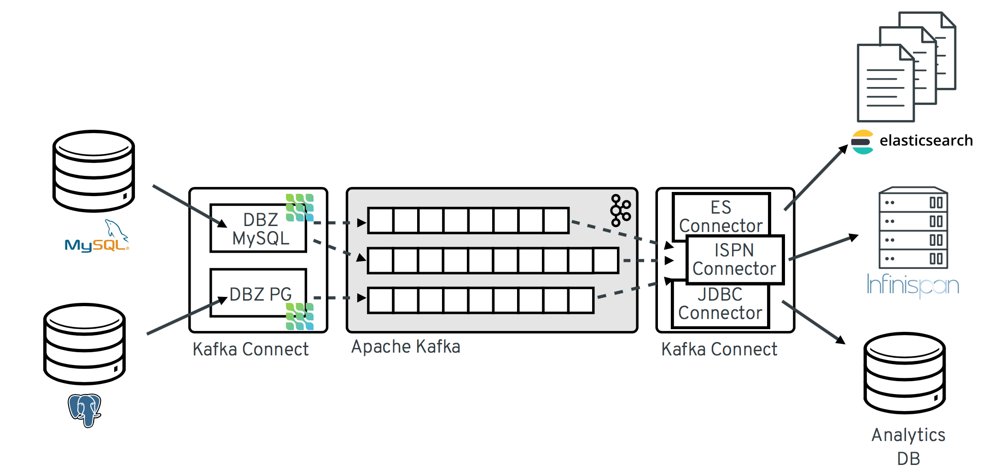
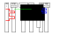

Построение микросервисных систем с использованием Kafka
Microservices: Coupling and Cohesion

Microservices: Synchronous Communication
( REST / gRPC / HTTP )
Microservices: Synchronous Communication
( REST / gRPC / HTTP )

Так ли это медленно?
0.3 ns 1 s 1 CPU cycle
...
120 ns 6 min Main memory access
50-150 μs 2-6 days Solid-state disk I/O
1-10 ms 1-12 months Rotational disk I/O
10-50 ms 1-5 years Network request
40 ms 4 years Internet: SF to NYC
Microservices: Async Communication (Celery)

Microservices: Async Communication (Kafka)

What is
 Kafka?
Kafka?
What is
Kafka?
Distributed Streaming Platform
Распределённый брокер сообщений
Распределённая система передачи сообщений
Apache Kafka — это распределенная система обмена сообщениями с высокой пропускной способностью, которую можно использовать для упрощения масштабируемого сбора данных. [↪]
Alternatives for Kafka
RabbitMQ
ActiveMQ
NUTS
Pulsar
NSQ
Kafka for what???
Messaging
Metrics
Website Activity Tracking
Log Aggregation
Stream Processing
Event Sourcing
Commit Log
Queue
Kafka: Partitions for Topics

Kafka: Partitions (P<C)

Kafka: Partitions (P=C)

Kafka: Partitions (P>C)

Kafka: Partitions: few consumer groups

Kafka: Consumers Offsets
┌───[Consumer Group 1]
│
1|2|3|4|5|6|7|8|9|10|11|12|13|14|15|16|17|18
│
└───[Consumer Group 2]
Kafka: Consumers Offsets
┌───[Consumer Group 1]
│
1|2|3|4|5|6|7|8|9|10|11|12|13|14|15|16|17|18|19|20
│
└───[Consumer Group 2]
Kafka: Consumers Offsets
┌───[Consumer Group 1]
│
1|2|3|4|5|6|7|8|9|10|11|12|13|14|15|16|17|18|19|20|21|22|23
│ │
│ └───[Consumer Group 2]
│
└───[Consumer Group 3]
Kafka: Consumers Offsets
[Consumer Group 4]───┐
│
┌───[Consumer Group 1] │
│ │
1|2|3|4|5|6|7|8|9|10|11|12|13|14|15|16|17|18|19|20|21|22|23
│ │
│ └───[Consumer Group 2]
│
└───[Consumer Group 3]
Kafka: Reset Consumer Group Offsets tooling
Reset to Datetime
Reset from Duration
Reset to Earliest
Reset to Latest
Reset to Current Time
Reset to Offset
Shift Offset by 'n'
Reset from file
Kafka: Overview, again :-)
Kafka: стратегии распределения по партициям
1. random
2. По хэшу ключа (если он есть)
3. «вручную» указать партицию
Kafka: Message structure
key, value
byte[], byte[]
Kafka: Message structure and content
key = {"foo":"bar","numer":1}
value = {"modelName":"DFGJHL8", "modelYear": 2019}
Kafka: Message structure and content...
key = {"foo":"bar","numer":1}
value = {"modelName":"DFGJHL8", "modelYear": 2019}
key = {"foo":"bar","numer":2}
value = {"modelName":"LKJDF3", "modelYear": 2017}
key = {"foo":"bar","numer":3}
value = {"modelName":"XXXFFF4", "modelYear": 2009}
key = {"foo":"bar","numer":4}
value = {"modelName":"AAAEEE5", "modelYear": 1999}
Kafka: Schema
Use Avro to define a data schema
Kafka: Schema: Avro
{ "namespace":"com.example.avroSample.model",
"type":"record",
"name":"Automobile",
"fields":[ { "name":"modelName",
"type":"string"},
{ "name":"modelYear",
"type":"int"}
]
}
Kafka: Schema overhead

Kafka: Schema: Avro: Schema Registry
Kafka: Schema Registry Concept

Microservices: Async Communication (Kafka). Again
Microservices: Async. What about databases?

PostgreSQL → Kafka

Stream data from PostgreSQL to Kafka

Microservices: Async. What about databases?
Microservices: Async. Debezium
